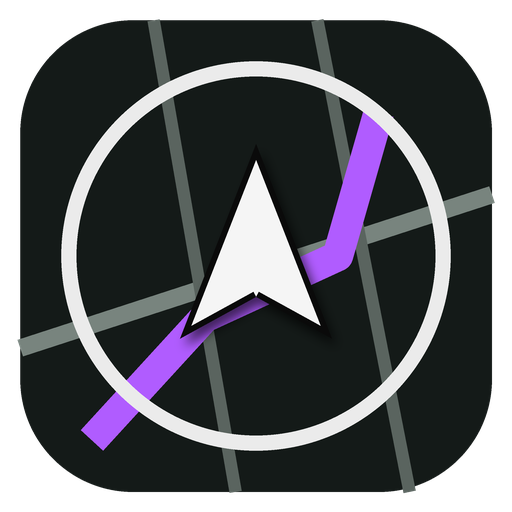

0
km/h
SIN GPS
Tramo · velocidad media
--:--

MINIMAPA
Navegador GPS · Modo libre
Pulsa para empezar
Uso personal. Pon el móvil en un soporte y no lo manipules mientras conduces. Los avisos son de radares de ubicación pública.